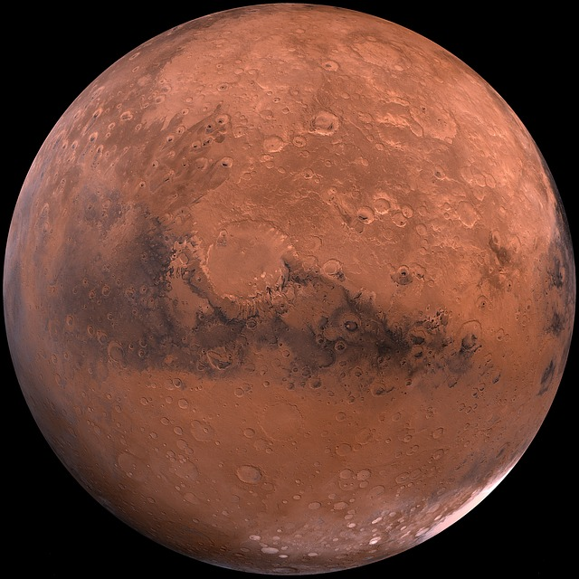

Der Mars ist der äußere Nachbarplanet der Erde, der viertnächste Planet an der Sonne und der äußerste Gesteinsplanet. Er ist hinter Merkur der zweitkleinste Planet im gesamten Sonnensystem. Seine zwei kleinen Monde, Phobos und Deimos, die beide nicht größer als 30 km sind und deshalb nicht groß genug, um die bekannt runde Form eines Planeten anzunehmen. Der Mars hat eine sehr dünne Atmosphäre, die nur 0,63% des Luftdrucks der Erdatmosphäre hat. Ergebnisse von Marsmissionen geben jedoch Hinweise darauf, dass die Marsatmosphäre vor Milliarden Jahren sehr viel dicker war und sogar flüssiges Wasser auf der Oberfläche ermöglichte. Sie wurde jedoch im Laufe der Zeit von Sonnenwinden abgetragen, da der Mars im Gegensatz zur Erde weder ein starkes Magnetfeld hat, das den Planeten gegen Sonnenwinde schützt, noch eine große Anziehungskraft, die die Teilchen der Atmosphäre auf der Oberfläche hält. Ohne eine dichte Atmosphäre verdunstet an der Oberfläche das Wasser. Das verbliebene Wasser auf dem Mars befindet sich heute an den Polregionen, wo es auf einem riesigen Gebiet in Tiefen bis 3,7 km in meist gefrorener Form vorliegt. Die alten Griechen haben den Mars aufgrund seiner blutroten Farbe, die durch Eisenoxid-Staub auf der Oberfläche entsteht, nach ihrem Kriegsgott Ares benannt. Die Römer benannten den Planeten und den Gott in Mars um. Dieser Name wurde von den Astronomen der folgenden Jahrhunderte übernommen.
Johannes

Der Mars. (als CC0 freigestelltes Bild von Pixabay.com)